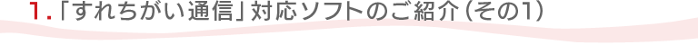
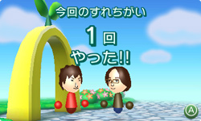
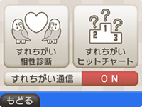
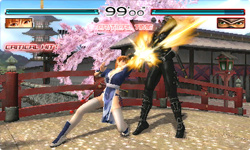
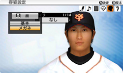
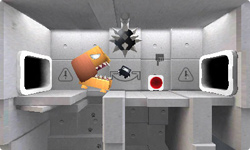
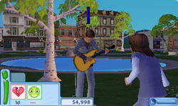
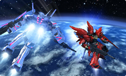
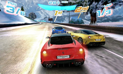

ニンテンドー3DSに内蔵された機能「すれちがい通信」では、本体を持ち歩くだけで（※）、普段遊んでいるゲームソフトのさまざまなデータを交換して、今までにない遊び方ができるようになっています。ここでは現在発売されている「すれちがい通信」対応ソフトと、それぞれのソフトでどんなデータを交換して、どんなふうに楽しめるのかを、まとめてご紹介します。ぜひ実際に「すれちがい通信」を体験して、新しい面白さを発見してみてください。
※
あらかじめニンテンドー3DS本体に登録しておけば、本体にささっていないソフトも含めて、最大で12本のソフトのすれちがい通信を同時に行うことが可能です。

ニンテンドー3DS内蔵ソフトの『Miiスタジオ』で作ったMiiを使って、すれちがい通信の楽しさを味わえる内蔵ソフトです。
すれちがい通信をすると、お互いのMii同士でのあいさつや、最近遊んだゲームの紹介をすることができます。また、お互いのMiiが持っているパネルのピースを交換して集める「ピースあつめの旅」や、Miiが勇者になってたたかう「すれちがい伝説」も楽しめます。
© 2011 Nintendo

SDカードに入れた音楽を再生したり、マイクで音声を録音したりできる、ニンテンドー3DS内蔵ソフトです。
自分の大好きな曲を「すれちがい」プレイリストに登録しておくと、すれちがい通信で「すれちがい相性診断」と「すれちがいヒットチャート」を利用できます。自分と音楽の趣味が近いリスナーとすれちがったり、自分が知らなかった名曲を見つける機会を増やしてくれるでしょう。
© 2011 Nintendo

3D立体視の機能を搭載し、歴代のキャラクターたちが集結した格闘ゲーム『DEAD OR ALIVE』シリーズの新作です。「クロニクル」モードや「アーケード」モード、インターネットを使った対戦や「タッグチャレンジ」モードなど、さまざまなモードが用意されています。
すれちがい通信では、すれちがった相手そっくりの戦い方をする"ゴースト"と対戦できます。"ゴースト"とは、プレイヤーの対戦戦績や技の使用率・成功率などのデータをもとにプレイヤーのクセを再現したCPUのことです。"ゴースト"を倒すと、フィギュアを手に入れることができます。
© 2011 コーエーテクモゲームス Team NINJA All rights reserved.
METROID Other M: © 2010 Nintendo Codeveloped by TECMO / Team NINJA

リアルなグラフィックの実在する選手や球団を操作して、臨場感たっぷりのプロ野球を楽しめる『プロ野球スピリッツ』シリーズの新作です。「ペナントレース」だけでなく、「対戦」や「ホームラン競争」など、さまざまなゲームモードを楽しむことができます。
すれちがい通信では、自分のプロフィールや「スピリッツ」モードで作成したオリジナルの選手のデータを交換できます。また、すれちがった相手のデータを集計した結果を表示することも可能です。
© Konami Digital Entertainment
（社）日本野球機構承認
NPB BIS プロ野球公式記録使用
プロ野球フランチャイズ球場公認
ゲーム内に再現された球場内看板は、原則として2010年プロ野球ペナントシーズン中のデータを基に制作しています。
「魂」はバンダイの商標です。

四角い箱の形をしたキューブなニンジャを操って、さまざまな忍術を駆使しながらカラクリ要塞を攻略するアクションゲームです。ニンテンドー3DSに搭載されたセンサーを使い、本体を傾けてニンジャを動かすという仕組みが特徴的です。
また、通常のストーリーモード以外に、オリジナルのステージを作成するエディットモードや、最速タイムを目指すタイムアタックモードが搭載されています。このステージデータや最速タイムのゴーストは、すれちがい通信で交換することができるので、面白さはさらに広がります。
© 2011 AQ INTERACTIVE INC.

仮想世界の中に住んでいる自分や友だちの分身である「シム」を操作して、キャラクターたちの人生をシミュレートする『ザ・シムズ』シリーズの新作です。自分に似たシムを作ったり、シムたちに指示を出して、シムたちの生活を神の視点で眺めたりすることができます。
すれちがい通信を使ってシムのデータを交換すると、お互いのシムがすれちがった相手の街に遊びにやってきます。また、シムを交換すると、髪型や服などの新しいアイテムも入手することができます。
© 2011 Electronic Arts Inc. EA, the EA logo, The Sims and The Sims 3 logo are trademarks of Electronic Arts Inc. All other trademarks are the property of their respective owners.

あの『ガンダム』を操縦して、ハイスピードで爽快な大迫力のバトルを楽しめる3Dアクションゲームです。歴代劇場版『ガンダム』、劇場版『Zガンダム』『逆襲のシャア』の名場面を追体験したり、自分の分身となるオリジナルパイロットを作成したり、モビルスーツをチューニングして強化したりと、『ガンダム』の世界を満喫できます。
また、すれちがい通信でほかのプレイヤーが作成したパイロットや機体のデータを受信すると、対戦相手として専用のミッションに登場するようになっています。
© 創通・サンライズ

派手なカーアクションを楽しめるレースゲーム『ASPHALT』シリーズが、3Dにパワーアップして登場しました。実在する21メーカー全42車種から車を選び、世界17都市の公道を爆走して、さまざまなミッションをクリアして楽しめます。最大6人で同時対戦が可能と、通信機能も充実しています。
さらに、すれちがい通信を利用すれば、ほかのプレイヤーの最速ラップのゴーストデータを受信して、そのゴーストとタイムを競って対戦することも可能となっています。
© 2011 Gameloft. All Rights Reserved. Gameloft, the Gameloft logo and Asphalt are trademarks of Gameloft in the US and/or other countries. Published by Konami Digital Entertainment Co., Ltd. under license from Gameloft. All manufacturers, cars, motorbikes, names, brands and associated imagery featured in Asphalt 3D game are trademarks and/or copyrighted materials of their respective owners.